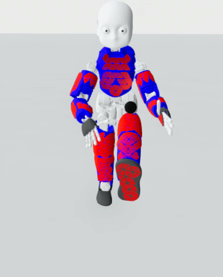
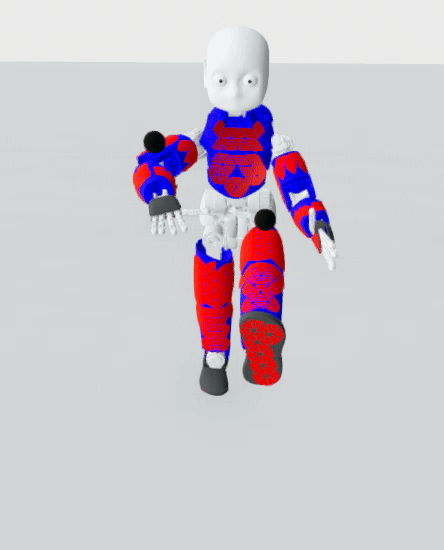
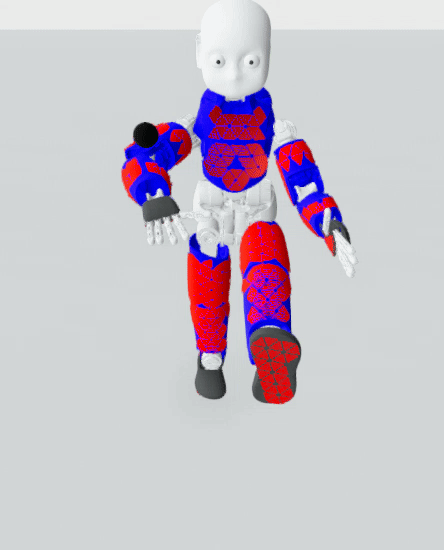
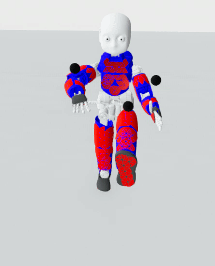

Řízení pomocí jakobiánu (Resolved-Rate Motion Control)
Cílem úlohy je implementovat regulátor RRMC (Resolved-Rate Motion Control), který uhýbá končetinami před kolizemi na základě zpětné vazby z umělé kůže robota. Na robota budou padat míčky a příslušnou část těla je třeba odsunout od kontaktu — tj. pohybovat jí proti normále dotyku.
Jedna končetina |
Více končetin |
|---|---|
 |
 |
 |
 |
Úkol
Implementujte metodu process() v souboru exercise_4.py, která bude ovládat robota pomocí RRMC. Funkce je tentokrát metodou třídy, abyste si mohli uchovávat vlastní stavové proměnné.
Třída přijímá jeden argument:
client– instance třídypyCubovládající simulaci
Funkce má klouby ovládat pomocí RRMC, tedy rychlostním řízením (
move_velocity)V kódu nesmíte volat
update_simulation()
Postupně dostanete čtyři scénáře s různými částmi těla zasaženými různým počtem míčků. Uhýbejte každou částí kůže, která je v kolizi s libovolným míčkem, ale pro každou část kůže použijte vždy jeden kontakt — najděte největší shluk (klastr) aktivovaných taxelů na dané části kůže.
Testovací skript exercise_4_tester.py spustí všechny čtyři testy postupně od nejjednoduššího. Po každém testu zavřete okno vizualizace (případně ukončete běh ve Studiu).
Bodování
Pro tuto úlohu není automatické číselné hodnocení. Úloha je splněna tehdy, když robot spolehlivě uhýbá před padajícími míčky. Ukázkové výsledky vidíte v animacích výše; nejde však o jediné správné řešení, chování závisí na zvolených parametrech RRMC.
Požadavky
Pro správnou funkci testeru exercise_4_tester.py:
nevytvářejte nového klienta, použijte argument
clientpředaný třídě RRMCnepřejmenovávejte funkci, soubor ani třídu
v kódu nevolejte
update_simulation()
Pro správné splnění úlohy:
Nevypínejte gravitaci